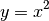

SquaredStretch¶
-
class
astropy.visualization.SquaredStretch[edit on github][source]¶ Bases:
astropy.visualization.PowerStretchA convenience class for a power stretch of 2.
The stretch is given by:

Attributes Summary
inverseAttributes Documentation
-
inverse¶
-